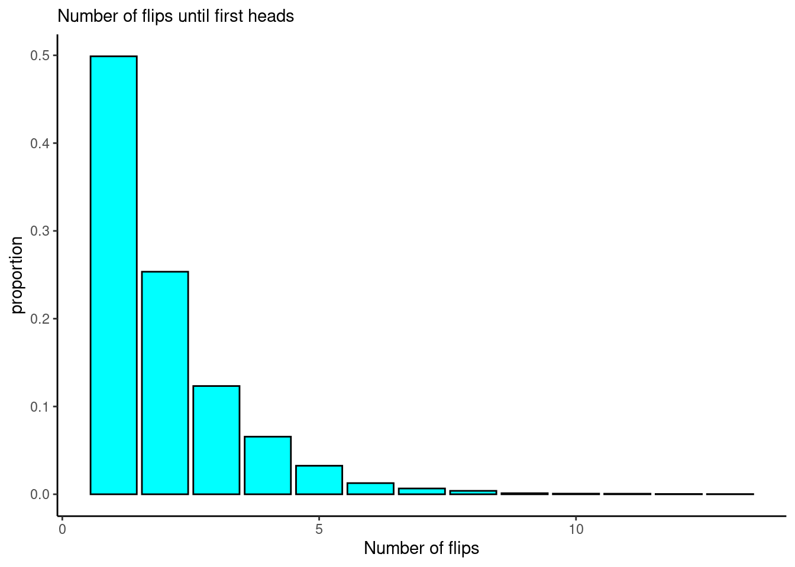
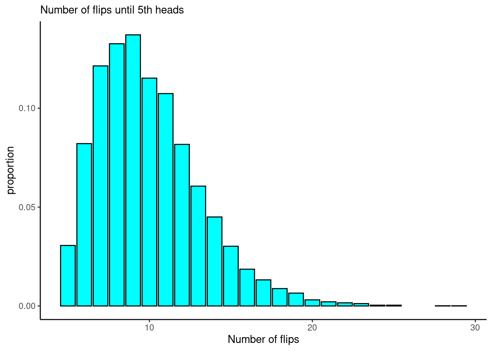

Chapter 10 Random Variables
10.1 Objectives
- Define and use properly in context all new terminology.
- Given a discrete random variable, obtain the pmf and cdf, and use them to obtain probabilities of events.
- Simulate random variable for a discrete distribution.
- Find the moments of a discrete random variable.
- Find the expected value of a linear transformation of a random variable.
10.2 Homework
10.2.1 Problem 1
Suppose we are flipping a fair coin, and the result of a single coin flip is either heads or tails. Let \(X\) be a random variable representing the number of flips until the first heads.
- Is \(X\) discrete or continuous? What is the domain/support of \(X\)?
\(X\) is discrete since number of flips is a discrete process (I can’t perform a fraction of a flip). The wording is specific in that it is the number of flips until the first heads, so we must flip at least once. The domain of \(X\) is \(S_X=\{1,2,...\}\).
- What values do you expect \(X\) to take? What do you think is the average of \(X\)? Don’t actually do any formal math, just think about if you were flipping a regular coin, how long it would take you to get the first heads.
I would expect \(X\) to be 1 or 2 fairly often, since the coin is fair and has an even chance of landing on heads or tails. I would expect large values of \(X\) to be rare. For these reasons, I think the average of \(X\) should be around 2 flips or a little less than 2.
- Advanced: In
R, generate 10,000 observations from \(X\). What is the average value of \(X\) based on this simulation?
Note: There are many ways to do this. Below is a description of one approach.
set.seed(68)
which(sample(c("H","T"),1000,replace=TRUE)=="H")[1]## [1] 2Now repeat using replicate() or do(). We will repeat 10000 times.
results <- do(10000)*which(sample(c("H","T"),1000,replace=TRUE)=="H")[1]mean(~result,data=results)## [1] 1.9849tally(~result,data=results,format="percent")## result
## 1 2 3 4 5 6 7 8 9 10 11 12 13
## 49.89 25.35 12.33 6.56 3.25 1.27 0.66 0.39 0.12 0.07 0.06 0.03 0.02results %>%
gf_props(~result,fill="cyan",color = "black") %>%
gf_theme(theme_classic()) %>%
gf_labs(x="Number of flips",
subtitle="Number of flips until first heads")
As predicted, the mean is close to 2, and the most common values of \(X\) are 1 and 2. The most common is 1 occurring 50% of the time, this is what we would think since the coin comes up Heads 50% of the time.
- We know that \(\mbox{P}(X=1) = \frac{1}{2}\) and \(\mbox{P}(X=2) = \frac{1}{2^2}\) so in general \(\mbox{P}(X=x) = \frac{1}{2^x}\). This is the pmf.
As an extra, to show that the sum of the infinite sequence of probabilities is 1 requires some Calculus knowledge. Let’s start with a partial sum: \[S_n=\frac{1}{2}+\frac{1}{4} +\cdots + \frac{1}{2^n}\] Now multiply both sides by \(\frac{1}{2}\).
\[\frac{1}{2}S_n=\frac{1}{4}+\frac{1}{8} +\cdots + \frac{1}{2^{n+1}}\]
The difference between these two sums is \[S_n-\frac{1}{2}S_n=\frac{1}{2}S_n=\frac{1}{2}-\frac{1}{2^{n+1}}\]
Now as \[\lim_{n \to +\infty} \frac{1}{2^{n+1}} = 0\]
So \[\lim_{n \to +\infty} \left[ \frac{1}{2}S_n=\frac{1}{2}-\frac{1}{2^{n+1}} \right]\]
This implies that \(S = 1\).
10.2.2 Problem 2
Repeat Problem 1, except part d, but with a different random variable, \(Y\): the number of coin flips until the fifth heads.
\(Y\) is discrete for the same reasons as \(X\). The domain of \(Y\) is \(S_Y=\{5,6,...\}\).
In order to land on heads five times, it would be reasonable to expect around 9 to 13 flips. Thus, I would expect \(Y\) to take values 8, 9, 10, 11, and 12 fairly often, and values outside of that range less often. I think the average of \(Y\) should be around 10 or so.
set.seed(102)
results <- do(10000)*which(sample(c("H","T"),1000,replace=TRUE)=="H")[5]mean(~result,data=results)## [1] 9.9728tally(~result,data=results,format="percent")## result
## 5 6 7 8 9 10 11 12 13 14 15 16 17
## 3.06 8.21 12.14 13.26 13.71 11.52 10.74 8.17 6.06 4.50 3.02 1.86 1.32
## 18 19 20 21 22 23 24 25 28 29
## 0.88 0.65 0.31 0.21 0.16 0.12 0.04 0.04 0.01 0.01results %>%
gf_props(~result,fill="cyan",color = "black") %>%
gf_theme(theme_classic()) %>%
gf_labs(x="Number of flips",
subtitle="Number of flips until 5th heads")
The most common values of \(Y\) are between 6 and 11. The average of \(Y\) in this simulation is 9.97, close to what we predicted.
- The pmf is not that bad but you must know about the binomial distribution first. If we get the fifth heads on the nth flip, the prior n-1 flips are a binomial with n-1 successes. The final flip is a success so we multiply the binomial by the probability of success.
10.2.3 Problem 3
Suppose you are a data analyst for a large international airport. Your boss, the head of the airport, is dismayed that this airport has received negative attention in the press for inefficiencies and sluggishness. In a staff meeting, your boss gives you a week to build a report addressing the “timeliness” at the airport. Your boss is in a big hurry and gives you no further information or guidance on this task.
Prior to building the report, you will need to conduct some analysis. To aid you in this, create a list of at least three random variables that will help you address timeliness at the airport. For each of your random variables,
Determine whether it is discrete or continuous.
Report its domain.
What is the experimental unit?
Explain how this random variable will be useful in addressing timeliness at the airport.
I will provide one example:
Let \(D\) be the difference between a flight’s actual departure and its scheduled departure. This is a continuous random variable, since time can be measured in fractions of minutes. A flight can be early or late, so domain is any real number. The experimental unit is each individual (non-canceled) flight. This is a useful random variable because the average value of \(D\) will describe whether flights take off on time. We could also find out how often \(D\) exceeds 0 (implying late departure) or how often \(D\) exceeds 30 minutes, which could indicate a “very late” departure.
There are many correct answers.
\(X\): Time it takes for a passenger to go through security (defined as time from entering security line to departing security with all belongings). Continuous. Experimental unit is individual passenger. This variable would help identify whether security line is too long. We could also explore how \(X\) changes based on day or time of day.
\(Y\): Status of each scheduled departure (on time, somewhat late, very late, canceled). Discrete. Experimental unit is each scheduled departure. This variable will help describe how often flights are canceled or late. We could also explore \(Y\) by airline, destination, time of day, etc.
\(Z\): Number of time-related complaints at customer service desk in a given day. Discrete. Experimental unit is day. This variable will describe attitudes/perceptions of customers. It is probably a bad sign if customers feel like the airport is not working efficiently. We can explore how \(Z\) changes over time.
10.2.4 Problem 4
Consider the experiment of rolling two fair six-sided dice. Let the random variable \(Y\) be the absolute difference between the two numbers that appear upon rolling the dice.
- What is the domain/support of \(Y\)?
\(S_Y=\{0,1,2,3,4,5\}\).
- What values do you expect \(Y\) to take? What do you think is the average of \(Y\)? Don’t actually do any formal math, just think about the experiment.
I’d say that \(Y\) should take values 0,1 and 2 fairly often. I’d guess that the average should be around 1.5.
- Find the probability mass function and cumulative distribution function of \(Y\).
Using counting methods, we know there are 36 possible values. We can just count them. The number 0 will occur when both numbers are the same, which happens six times. The number 1 happens when the first die is one larger than the second, 5 times, or vice versa. Thus 1 happens 10 times. Continue this process. Thus, the pmf of \(Y\) becomes:
\[ f_Y(y)=\left\{ \renewcommand{\arraystretch}{1.4} \begin{array}{ll} \frac{6}{36}, & y=0 \\ \frac{10}{36}, & y=1 \\ \frac{8}{36}, & y=2 \\ \frac{6}{36}, & y=3 \\ \frac{4}{36}, & y=4 \\ \frac{2}{36}, & y=5 \\ 0, & \mbox{otherwise} \end{array} \right . \] We could also create a table and count the entries.
\[ \begin{array}{cc|cccccc} & & & &\textbf{Die} & \textbf{2} \\ & & 1 & 2 & 3 & 4 & 5 & 6 \\&\hline 1 & 0 & 1 & 2 & 3 & 4 & 5 \\\textbf{Die 1} & 2 & 1 & 0 & 1 & 2 &3 & 4 \\& 3 & 2 & 1 & 0 & 1 & 2 & 3 \\& 4 & 3 & 2 & 1 & 0 & 1 & 2 \\& 5 & 4 & 3 & 2 & 1 & 0 & 1 \\& 6 & 5 & 4 & 3 & 2 & 1 & 0 \end{array} \]
The cdf of \(Y\) is thus, \[ F_Y(y)=\left\{\renewcommand{\arraystretch}{1.4} \begin{array}{ll} 0, & y < 0 \\ \frac{6}{36}, & 0\leq y <1 \\ \frac{16}{36}, & 1\leq y <2 \\ \frac{24}{36}, & 2 \leq y <3 \\ \frac{30}{36}, & 3 \leq y <4 \\ \frac{34}{36}, & 4 \leq y <5 \\ \frac{36}{36}, & y\geq 5 \end{array} \right . \]
- Find the expected value and variance of \(Y\). \[ \mbox{E}(Y)=\sum_{y=0}^5 y\mbox{P}(Y=y) = 0\times {6\over 36} + 1 \times {10\over 36} + 2\times {8\over 36} + 3\times {6\over 36} + 4 \times {4\over 36} + 5 \times {2\over 36} = \] \[ {70\over 36} = 1.944 \]
y<-c(0,1,2,3,4,5)
mean_y<-sum(y*c(6,10,8,6,4,2)/36)
mean_y## [1] 1.944444The variance is:
sum((y-mean_y)^2*(c(6,10,8,6,4,2)/36))## [1] 2.052469- Advanced: In
R, obtain 10,000 realizations of \(Y\). In other words, simulate the roll of two fair dice, record the absolute difference and repeat this 10,000 times. Construct a frequency table of your results (what percentage of time did you get a difference of 0? difference of 1? etc.) Find the mean and variance of your simulated sample of \(Y\). Were they close to your answers in part d?
set.seed(9)
sim_diffs<-do(10000)*abs(diff(sample(1:6,2,replace=T)))tally(~abs,data=sim_diffs,format="proportion")## abs
## 0 1 2 3 4 5
## 0.1643 0.2752 0.2273 0.1618 0.1116 0.0598mean(~abs,data=sim_diffs)## [1] 1.9606var(sim_diffs)*9999/10000## abs
## abs 2.077248true_mean<-sum(c(6,10,8,6,4,2)/36*c(0,1,2,3,4,5))
true_mean## [1] 1.944444sum(c(6,10,8,6,4,2)/36*(c(0,1,2,3,4,5)-true_mean)^2)## [1] 2.052469We got similar mean and variance to the theoretical values.
10.2.5 Problem 5
Prove the Lemma from the Notes: Let \(X\) be a discrete random variable, and let \(a\) and \(b\) be constants. Show \(\mbox{E}(aX + b)=a\mbox{E}(X)+b\).
\[
\mbox{E}(aX+b)=\sum_x (ax+b)f_X(x) = \sum_x axf_X(x)+\sum_x bf_X(x) + a\sum_x xf_X(x)+b\sum_x f_X(x)
\]
Since \(\sum_x xf_X(x) = \mbox{E}(X)\) and \(\sum_x f_X(x)=1\), this reduces to \(a\mbox{E}(X)+b\).
\[ \mbox{Var}(aX+b)=\mbox{E}\left[(aX+b-\mbox{E}(aX+b))^2\right]=\mbox{E}\left[(aX+b-a\mbox{E}(X)-b)^2\right]=\mbox{E}\left[(aX-a\mbox{E}(X)^2\right] \] \[ =\mbox{E}\left[a^2(X-\mbox{E}(X))^2\right]=a^2\mbox{E}\left[(X-\mbox{E}(X))^2\right]=a^2\mbox{Var}(X) \]
10.2.6 Problem 6
In the Notes, we saw that \(\mbox{Var}(X)=\mbox{E}[(X-\mu_X)^2]\). Show that \(\mbox{Var}(X)\) is also equal to \(\mbox{E}(X^2)-[\mbox{E}(X)]^2\). \[ \mbox{Var}(X)=\mbox{E}[(X-\mu_X)^2]=\mbox{E}[X^2-2\mu_XX+\mu_X^2] = \mbox{E}(X^2)-\mbox{E}(2\mu_XX)+\mbox{E}(\mu_X^2) \]
The quantity \(\mu_X\) is a constant with respect to \(X\), so \[ =\mbox{E}(X^2)-2\mu_X\mbox{E}(X)+\mu_X^2=\mbox{E}(X^2)-2\mu_X^2+\mu_X^2 = \mbox{E}(X^2)-\mu_X^2 \]